Storyboard A/B: 16 cảnh, cùng lời, khác hình
Anh duyệt bản ghép: mở bằng trò đoán và lộ người dẫn là AI, thân bài là bảng 3 cấp. Hai bản dưới đây cùng 16 cảnh, cùng mốc giây, cùng lời Emma, chỉ khác hình và chuyển động. Anh chọn A hay B cho từng cảnh (ví dụ SC01 của A + SC02 của B). Ảnh là tham chiếu, bấm ảnh có chữ "Pinterest" để mở nguồn. Ảnh không ghi Pinterest là UI Promer thật chụp 04/11 hoặc ảnh Promer đã tạo.
Hai bản khác nhau thế nào
| A · Studio tím | B · Bàn sáng | |
|---|---|---|
| Nền đồ hoạ | Tối, quầng tím, thẻ thuỷ tinh (gần kiểu Iman video 1) | Sáng #E4EAF1 như web Promer, thẻ trắng bo góc, giấy note |
| UI Promer | Toàn khung, máy trôi theo con trỏ, người dẫn trong khung bo góc nhỏ | Trong thẻ trắng nổi giữa nền, người dẫn khung dọc bên phải |
| Chuyển cảnh | Cắt cứng + zoom nhanh, đường quét sáng | Trượt thẻ, xé giấy |
| Chỗ hỏng | Đứng hình + vòng tròn tím khoanh | Hai thẻ sai ✗ / đúng ✓ cạnh nhau |
| Chung cho cả hai | Cùng người dẫn, cùng phòng ấm có đèn tím, 3 góc máy A/B/C cắt mỗi 3–4,5 giây · người dẫn khoảng 60–65% thời lượng · chữ Inter ExtraBold, nhấn tím #873EFF · nhạc nền suốt video, thấp dưới giọng · link template ở SC08 (khoảng 40% video) và SC16 | |
Màn đen 6 khung, rồi 3 quảng cáo son dọc bật ra trên nền tối, quầng tím sau lưng. Dấu "?" nhảy lần lượt theo nhịp nhạc. Người dẫn chỉ nghe tiếng (giọng trước, hình sau).

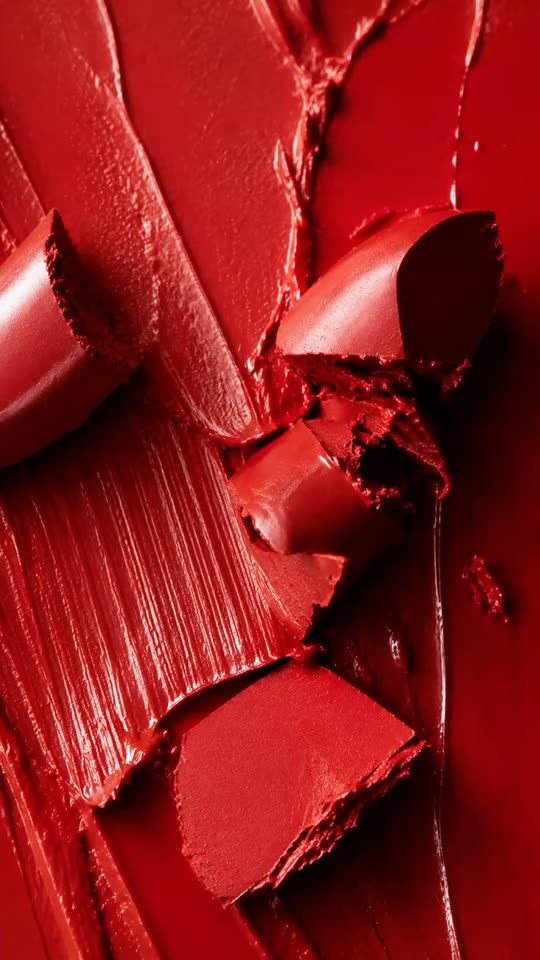
Người dẫn góc B. Đúng chữ "I", khung người dẫn đổi liền 3 phong cách trong 1,5 giây (mỗi phong cách 6 khung, cùng micro, cùng tư thế), quay về bình thường. Im 1 giây, rồi nhạc nền vào.

Người dẫn góc B. Đúng chữ "I", một đường quét sáng chạy ngang mặt cô để lộ lưới dựng hình (wireframe) nửa mặt trong 1 giây, rồi khép lại. Không đổi phong cách.
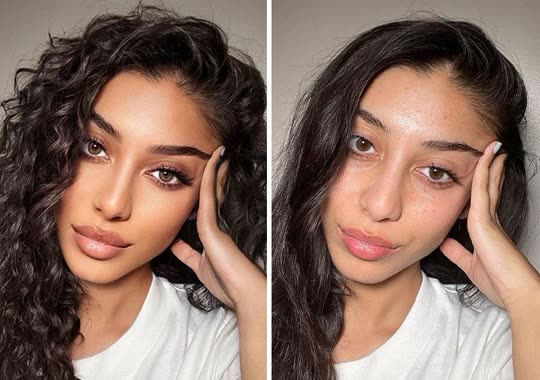
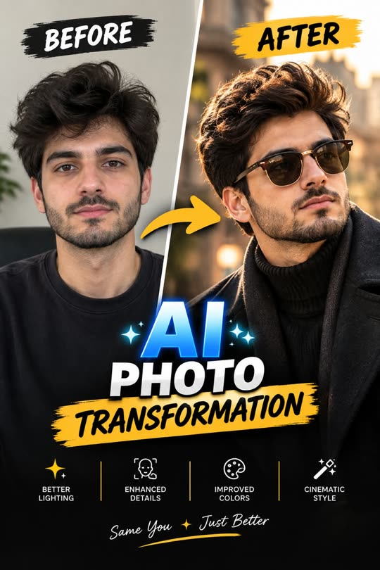
Cắt góc A, C, A mỗi 3–4 giây. Chữ "NEW PHOTOSHOOT" gõ ra rồi bị gạch ngang tím (kiểu Iman gạch nỗi sợ).


Người dẫn đứng yên góc A, bên cạnh là tờ hoá đơn studio dán lên khung như giấy note, rồi bị xé đi theo chữ "out of that".
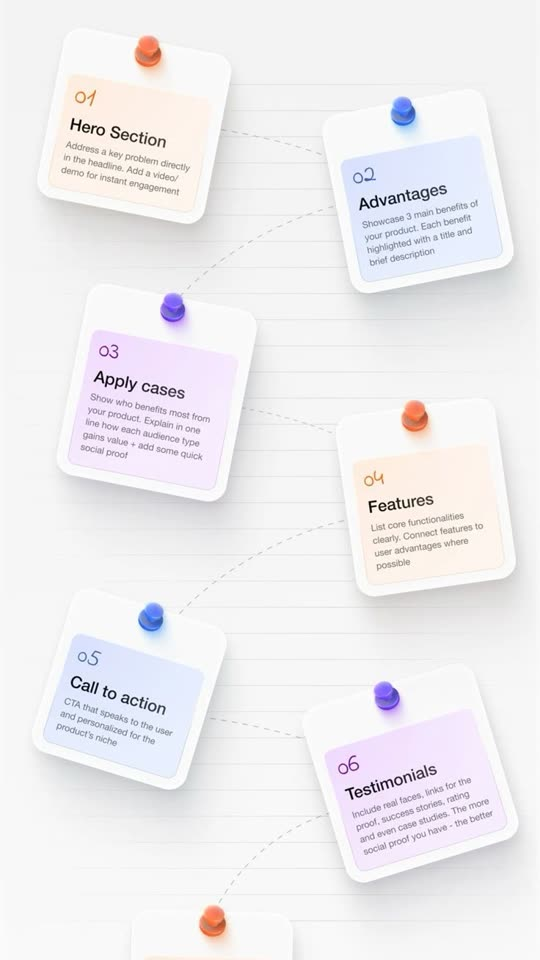
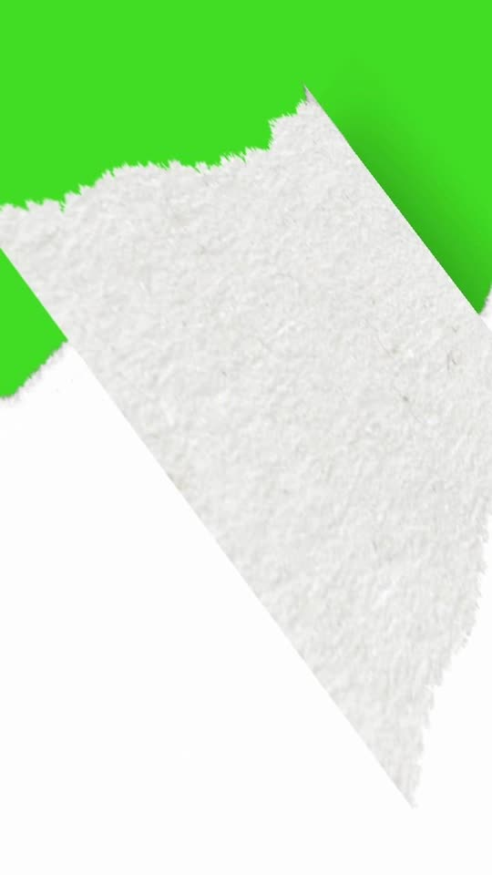
3 thẻ thuỷ tinh tím xếp chéo trong không gian tối, đánh số 1, 2, 3, mặt thẻ che dấu sao. Thanh "Ad skills 0%" dưới cùng.
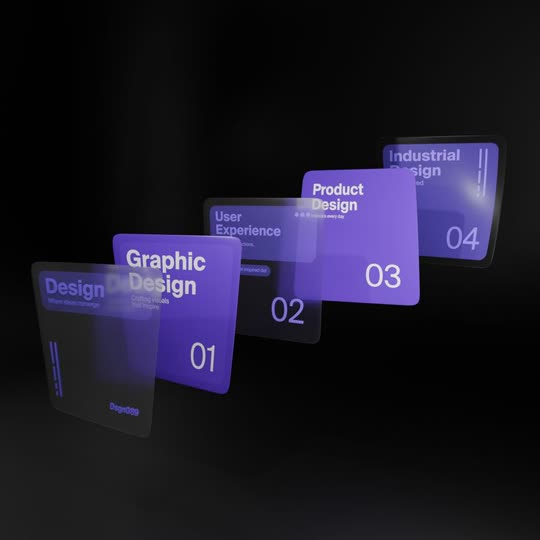

Bảng 3 ô trắng trên nền sáng #E4EAF1, kiểu thẻ web Promer, ô chưa mở mờ đi. Thanh "0%" mảnh màu tím.
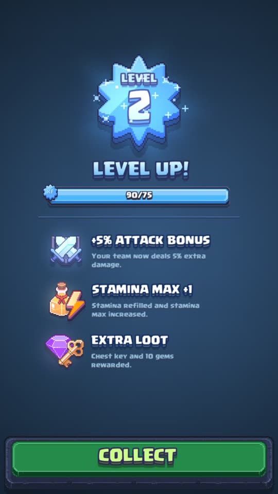

Ảnh son tĩnh nằm giữa một bức tường quảng cáo đang chạy (mờ, động). Người dẫn trong khung bo góc góc phải.
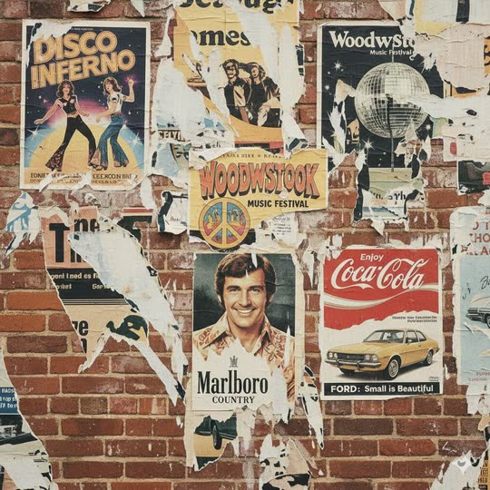
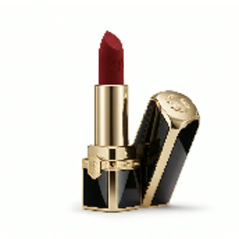
Trang sản phẩm Shopify dựng lại, ảnh son tĩnh. Bên cạnh, khung feed điện thoại cuộn qua các video. Người dẫn khung dọc bên phải.

UI Ad Animation dựng lại toàn khung trên nền tối, máy trôi theo con trỏ, zoom vào ô "Use clear product image". Kết quả son trồi lên chạy toàn khung 3 giây.

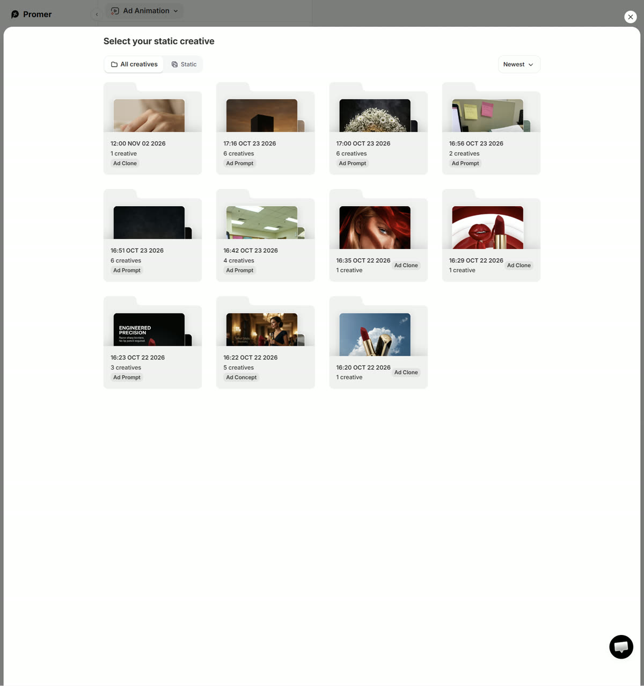
Đứng hình cận nắp son, vòng tròn tím khoanh chỗ chữ chảy, chữ "THE LOGO MELTED" đập vào.
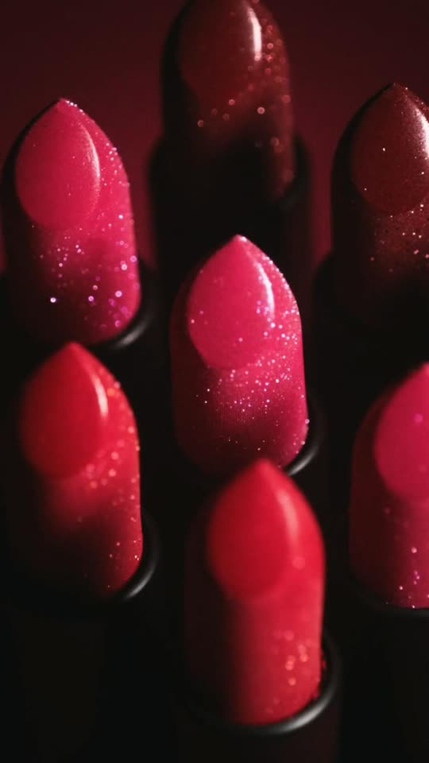
Hai thẻ cạnh nhau: bản hỏng (chữ chảy, dấu X) và bản đúng (máy chậm, dấu ✓).
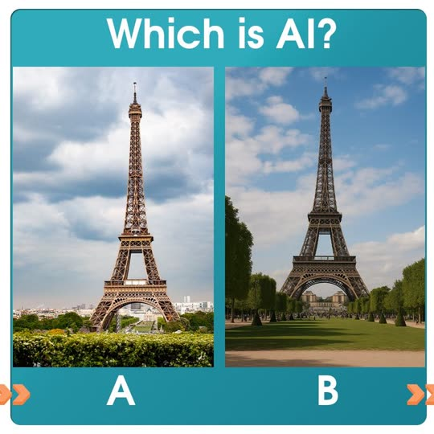
Người dẫn góc B, xen 2 clip creator tô son kiểu điện thoại, mỗi clip 3 giây.
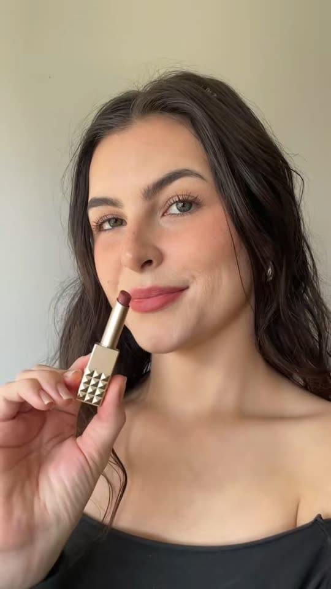

UI AI UGC dựng lại trên nền tối, máy lia từ ô ý tưởng sang lưới avatar, zoom vào avatar được chọn. Kết quả UGC chạy toàn khung.

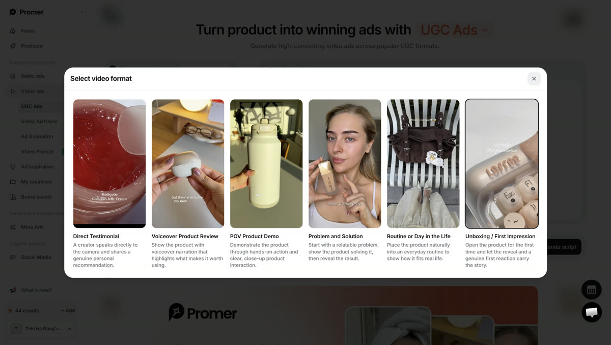
UI trong thẻ trắng, người dẫn khung dọc, con trỏ chọn avatar. Kết quả UGC mở ra thành khung điện thoại dọc giữa nền sáng.
Hai clip UGC cạnh nhau, chữ "REAL OR AI?", nhạc tắt, im 2–3 giây, rồi lật đáp án.
Đứng hình bàn tay cầm son, vòng tròn tím khoanh, so cạnh ảnh son thật.
Thẻ 3 lật, thanh lên 66%. Bức tường quảng cáo tối, một quảng cáo sáng lên giữa đám.
UI Video Ad Clone dựng lại trên nền tối: dán link, kịch bản tách cảnh, son thay vào từng cảnh. Kết quả clone chạy toàn khung.

UI trong thẻ trắng, người dẫn khung dọc. Hai cột cạnh nhau: quảng cáo gốc | bản clone son, cùng khuôn từng cảnh.
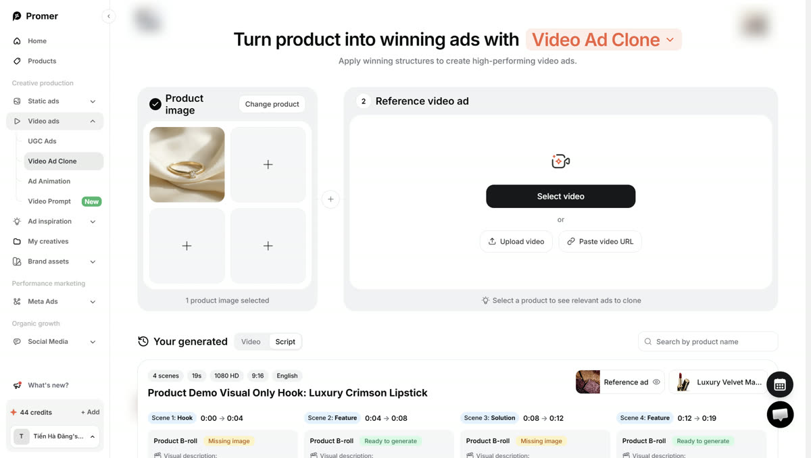
3 thẻ sáng cả, thanh 100%. Người dẫn góc C, nhạc lên, logo Promer, câu kết cố định của kênh.

Lời Emma đầy đủ (bản 1, 04/11)
105 câu · 1366 chữ · khoảng 7,9 phút lời ở tốc độ Emma; cộng đoạn chiếu kết quả, câu đố im 2–3 giây và nhịp hình thì khoảng 9–9,5 phút. Mỗi câu "Góc A/B nói" là một clip người dẫn dưới 8 giây (70 clip). "Giọng đè lên hình" là lời Emma đọc trên UI Promer hoặc hình minh hoạ, không cần nhép miệng. Mọi chi tiết tính năng lấy từ màn app thật chụp 04/11.
| SC01 · Hook: đoán quảng cáo | ||
| 001 | Góc A nói | Look at these three lipstick ads. Which one cost the most to film? |
| 002 | Giọng đè lên hình | The first one has studio light and a slow camera move around the gold cap. |
| 003 | Giọng đè lên hình | The second is a creator testing the shade on her own lips. |
| 004 | Giọng đè lên hình | The third is a macro shot, close enough to see the texture. |
| 005 | Giọng đè lên hình | Take a second. Pick one. |
| SC02 · Lộ: người dẫn cũng là AI | ||
| 006 | Góc B nói | None of them were filmed. And neither was I. |
| 007 | Góc A nói | I'm an AI host. Every frame of me, and every ad you just saw, was generated. |
| 008 | Góc A nói | Which is exactly why I can show you how it's done. |
| 009 | Góc B nói | No studio. No model to book. No editor. One product photo and one app. |
| SC03 · Đuổi khéo + lời hứa | ||
| 010 | Góc A nói | If you're happy paying for a new photoshoot every time an ad gets tired, you can click away now. |
| 011 | Góc B nói | The next ten minutes are for store owners who want out of that loop. |
| 012 | Góc A nói | I'll take one real product, this red lipstick, and turn it into three kinds of video ads. |
| 013 | Góc B nói | And for each one, I'll show you where it usually breaks, so yours doesn't. |
| SC04 · Bảng 3 cấp | ||
| 014 | Giọng đè lên hình | Three levels. Level one, a photo that moves. Level two, a person who sounds real. |
| 015 | Giọng đè lên hình | Level three, an ad structure that's already winning. |
| 016 | Góc A nói | Each level takes a bit more effort, and each one pays back more. |
| SC05 · Cấp 1: vấn đề | ||
| 017 | Góc A nói | Level one. You already have the photo. It's sitting on your product page right now. |
| 018 | Giọng đè lên hình | But on the feed, everything around it moves. Video, motion, people talking. |
| 019 | Góc B nói | A still photo between all that is easy to scroll past, even when the product is beautiful. |
| 020 | Góc A nói | So the first job isn't a new shoot. It's making the photo you already paid for move. |
| 021 | Góc B nói | Quick check before you start. Is the photo sharp? Is the whole product in frame? |
| 022 | Góc A nói | Is the light clean, with no harsh glare on the label? If yes, you're ready. |
| 023 | Giọng đè lên hình | In Promer, that's Ad Animation. |
| SC06 · Cấp 1: làm trong Ad Animation | ||
| 024 | Giọng đè lên hình | You can upload a fresh product photo, or pick a static ad you've already made. |
| 025 | Giọng đè lên hình | I'm picking this one, the lipstick on clouds, from my creatives. |
| 026 | Giọng đè lên hình | Promer reminds you of two things right here. Use a clear product image, and avoid text-heavy visuals. |
| 027 | Góc B nói | Take that seriously. Text inside the image is the first thing that warps once it starts moving. |
| 028 | Giọng đè lên hình | Next, the model. There are eight, each with a short note on what it's good at. |
| 029 | Giọng đè lên hình | Seedance 2.0 Fast is the default. Veo 3.1 and Kling 4.0 are there when you want more detail. |
| 030 | Góc A nói | My rule: test the motion on a fast model first, then rerun the winner on a stronger one. |
| 031 | Giọng đè lên hình | Nine by sixteen for the feed, ten seconds, and generate. |
| 032 | Góc A nói | Now, what motion should you ask for? For small products, three ideas work almost every time. |
| 033 | Góc B nói | One. The product rises out of its case. It's a reveal, and reveals hold attention. |
| 034 | Góc B nói | Two. A slow sweep of light across the surface. It shows the material without a word. |
| 035 | Góc B nói | Three. Macro texture. Get close enough that people can almost touch it. |
| 036 | Giọng đè lên hình | Here's what came back for ours. |
| 037 | Góc A nói | Same photo. Now it opens, it rises, and the light moves across the gold. |
| 038 | Góc A nói | And keep the first second strong. On the feed, the first second decides if anyone sees the rest. |
| SC07 · Cấp 1: chỗ hay hỏng | ||
| 039 | Góc B nói | Here's where level one breaks. |
| 040 | Giọng đè lên hình | Spin the camera too fast around the cap, and the lettering on the badge starts to melt. |
| 041 | Góc A nói | Two fixes. Ask for a slow orbit, or keep the logo facing the camera the whole time. |
| 042 | Góc B nói | And always check the last frame. That's the one people see when the ad loops. |
| SC08 · Câu cầu + link template | ||
| 043 | Góc A nói | A moving photo stops the scroll. But it doesn't make anyone believe you. |
| 044 | Góc B nói | For a lipstick, belief comes from seeing it on real lips. That's level two. |
| 045 | Góc A nói | Before we go there, the template I just used is in the description. Try level one on your own product. |
| SC09 · Cấp 2: vấn đề | ||
| 046 | Góc A nói | Level two. Nobody trusts a lipstick until they see it on someone's lips. |
| 047 | Góc B nói | In normal light, from someone who sounds like a person, not a brand. |
| 048 | Giọng đè lên hình | That's what creator videos do. They show the product the way a friend would. |
| 049 | Góc B nói | Brand footage tells people the product is beautiful. A creator tells them it's true. |
| 050 | Góc A nói | Here's how to get that feeling without booking anyone. |
| SC10 · Cấp 2: làm trong AI UGC Ads | ||
| 051 | Giọng đè lên hình | This is UGC Ads. Add your product image first. |
| 052 | Giọng đè lên hình | Then Promer asks how you want to start. Get UGC ideas, select a format, or add your own idea. |
| 053 | Góc B nói | If you're new, take the recommended option. Let it suggest ideas from your product, then choose. |
| 054 | Giọng đè lên hình | There are six formats. Direct testimonial, voiceover review, POV demo, |
| 055 | Giọng đè lên hình | problem and solution, a day in the life, and unboxing. |
| 056 | Góc A nói | For lipstick, I'd test the direct testimonial against a POV demo. |
| 057 | Góc A nói | One sells the feeling. The other shows the shade. |
| 058 | Giọng đè lên hình | Then pick an avatar who looks like the person who actually buys from you. |
| 059 | Giọng đè lên hình | Pick a voice, keep it at fifteen seconds, and generate the script. |
| 060 | Góc B nói | Now the most important step. Read the script out loud before you make the video. |
| 061 | Góc A nói | If it sounds like an ad, rewrite it. Real people don't say luxurious velvet finish. |
| 062 | Góc A nói | They say, it didn't move all day, and I drank coffee. |
| 063 | Góc B nói | A simple shape that works. First, a line a friend would say. Then the problem. |
| 064 | Góc B nói | Then proof, on the lips, in normal light. Then where to get it. |
| 065 | Giọng đè lên hình | Here's the creator ad. |
| 066 | Góc A nói | And test two avatars on the same script. You'll learn more from that than from rewriting ten times. |
| SC11 · Câu đố Real or AI | ||
| 067 | Góc A nói | Quick test. One of these was filmed on a phone. |
| 068 | Giọng đè lên hình | Real, or AI? |
| 069 | Góc B nói | Both are AI. If you hesitated, that's the point. |
| SC12 · Cấp 2: chỗ hay hỏng | ||
| 070 | Góc A nói | Here's where level two breaks. Watch the hands. |
| 071 | Giọng đè lên hình | If she's holding a lipstick that isn't yours, a different case, a different shape, the whole ad is lying. |
| 072 | Góc B nói | Check the product in every shot. One wrong frame is enough for someone to notice. |
| 073 | Góc A nói | And check the mouth when she says the product name. That's where AI slips first. |
| SC13 · Cấp 3: quảng cáo đã mệt | ||
| 074 | Góc A nói | Level three is the uncomfortable one. |
| 075 | Góc B nói | Your best ad gets tired. People have seen it, and the results slowly drop. |
| 076 | Góc A nói | Most stores guess what to make next. Don't guess. |
| 077 | Giọng đè lên hình | Find ads in your category that have been running for months. Brands don't keep paying for ads that don't work. |
| 078 | Góc A nói | Then copy their structure. Not their words. Their structure. |
| 079 | Góc B nói | Three signs an ad is a real winner. It's been running a long time. |
| 080 | Góc B nói | The brand made several versions of it. And the same hook keeps coming back. |
| 081 | Góc A nói | You can find them in the ad spy tab inside Promer, or in any public ad library. |
| SC14 · Cấp 3: làm trong Video Ad Clone | ||
| 082 | Giọng đè lên hình | This is Video Ad Clone. Add your product, then choose a reference ad. |
| 083 | Giọng đè lên hình | Select one from the library, upload a video, or paste a video link. |
| 084 | Giọng đè lên hình | The library has three tabs. Video ads, ad spy, and your own library. |
| 085 | Giọng đè lên hình | Pick your product first, and it suggests ads that fit. |
| 086 | Góc B nói | I picked a visual-only product demo. No talking, just macro shots. Perfect for a lipstick. |
| 087 | Giọng đè lên hình | Promer breaks it into scenes. Hook, feature, solution, feature. Four scenes, nineteen seconds. |
| 088 | Giọng đè lên hình | Each scene keeps the timing and camera of the original, with my lipstick in it. |
| 089 | Góc A nói | That's the trick. The pacing was already proven. You're only changing what's in the frame. |
| 090 | Góc A nói | What to keep: the hook timing, the order of shots, the length. |
| 091 | Góc B nói | What to change: the product, the words, and the colors, so it looks like your brand. |
| 092 | Giọng đè lên hình | Then generate the full video. |
| 093 | Góc A nói | Same rhythm as an ad that's been working. Your product, your colors. |
| SC15 · Cấp 3: chỗ hay hỏng | ||
| 094 | Góc B nói | And here's where level three breaks. |
| 095 | Góc A nói | Clone the structure, never the words. If your ad reads like theirs, you just made their ad. |
| 096 | Góc B nói | Rewrite every line in your own voice, and change at least one visual idea so it's yours. |
| SC16 · Tổng kết + câu kết | ||
| 097 | Góc A nói | So, three levels. A photo that moves, to stop the scroll. |
| 098 | Góc B nói | A person who sounds real, to build trust. |
| 099 | Góc A nói | And a structure that's already winning, to replace an ad that's tired. |
| 100 | Góc B nói | Here's your week. Today, turn one product photo into a moving ad. |
| 101 | Góc A nói | Next, test two creator ads with the same script and different avatars. |
| 102 | Góc B nói | And the day your best ad slows down, clone a winner instead of guessing. |
| 103 | Góc A nói | Start at level one today. The other two will make sense once you have. |
| 104 | Giọng đè lên hình | Every template from this video is in the description. |
| 105 | Góc A nói | Go make something worth stopping for. I'll see you in the next one. |
Người xem được gì
| Vì sao dừng lại | 20 giây đầu là trò đoán quảng cáo nào quay thật, rồi lật hai lần: không cái nào được quay, và người đang nói cũng là AI. |
|---|---|
| Mang về được gì | Ba cấp làm quảng cáo video (ảnh động, người nói, học khuôn quảng cáo đang thắng), mỗi cấp một chỗ hay hỏng và cách tránh. Dùng được cả khi không dùng Promer. |
| Xem xong làm gì | Biết shop mình đang ở cấp nào, mở template cấp đó trong mô tả và làm thử ngay. |
Còn thiếu, cần làm trước khi dựng
- Lời Emma đầy đủ nằm ở mục ngay trên. Anh đọc và sửa câu nào thì em sửa trước khi tạo clip.
- Người dẫn: anh đã duyệt (04/11). Góc A cận trung, góc B cận nghiêng, góc C rộng; clip thử A và B đạt.
- 3 quảng cáo son ở SC01 phải trông như quay thật, nếu không trò đoán phản tác dụng. Làm và duyệt trước.
- Câu kết cố định của kênh, tiêu đề (khuôn có số, không trùng tiêu đề các video đã đăng).